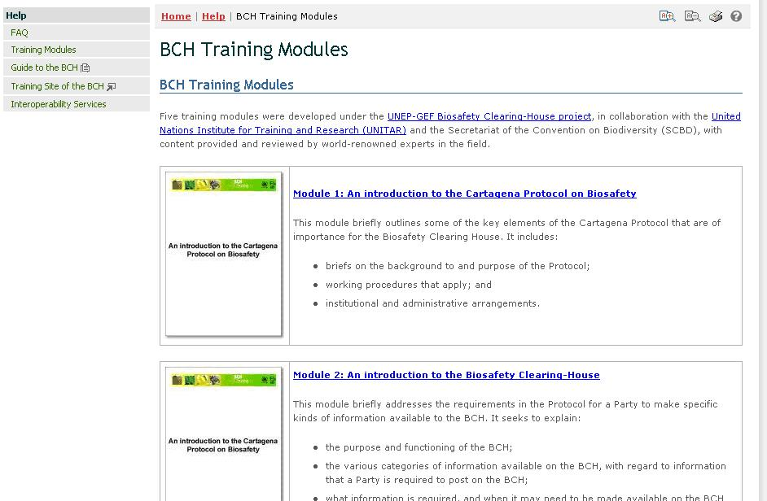
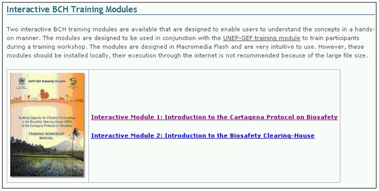

Les Modules de formation du CEPRB ont été développés selon le projet du CEPRB du PNUE-FEM, en collaboration avec l’Institut des Nations Unies pour la Formation et la Recherche (UNITAR) et le Secrétariat de la Convention sur la Diversité Biologique (SCDB). Le contenu a été fourni et analysé par des experts mondialement connus dans ce domaine.

Figure 59
Les Modules de formation sont fournis sous trois formats :
-
Les Modules de formation du CEPRB ;
-
Les Modules de formation Interactifs du CEPRB ;
-
Le Manuel de l’Atelier de Formation du PNUE-FEM
Les Modules de formation du CEPRB consistent en cinq modules qui présentent une introduction à :
-
Le Protocole de Cartagena sur la Prévention des Risques Biotechnologiques ;
-
Le Centre d’échange pour la Prévention des Risques Biotechnologiques ;
-
Le Portail Central du CEPRB ;
-
Trouver l’information sur le Portail Central du CEPRB ;
-
Enregistrer des données sur le Portail Central du CEPRB
Les Modules de formation interactifs du CEPRB ont été conçus pour être utilisés conjointement avec le manuel de formation du PNUE-FEM pour former les participants pendant les ateliers.

Figure 60
Le Manuel de l’atelier de formation du PNUE-FEM est conçu pour donner aux formateurs une vue d’ensemble de tout le processus de formation et pour leur offrir une aperçu de certains des domaines qui devraient être traités pendant les ateliers de formation du CEPRB. Le module complet de l’atelier de formation en ligne fournit des directives sur la gestion du programme de formation du CEPRB.